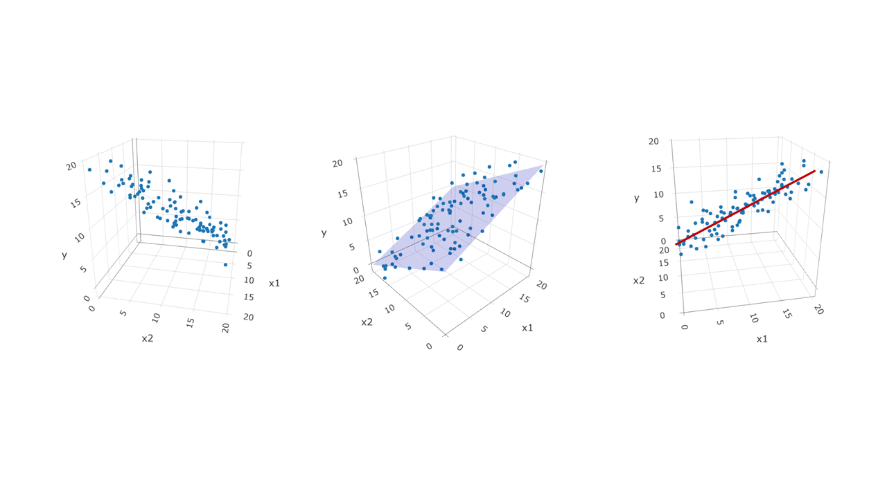
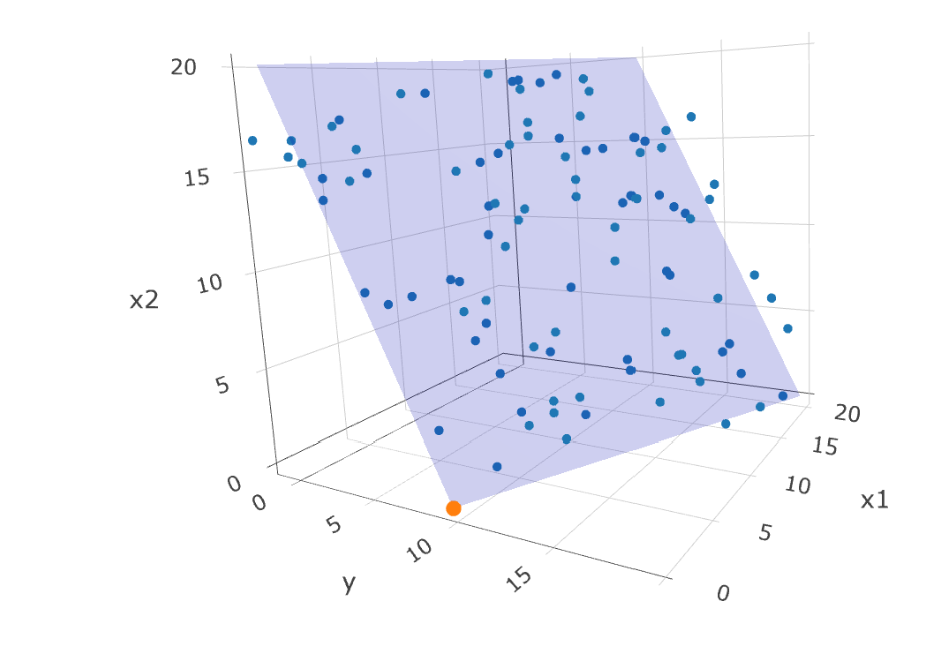

15 Multiple Regression
15.1 Anwendungsbereich
Die multiple Regression wird zur Vorhersage einer metrischen Variable durch mehrere metrische Variablen verwendet.
Der Zusammenhang wird als Einfluss mehrerer erklärenden Variablen1 (predictor variables) auf eine zu erklärende Variable2 (outcome/response variable) quantifiziert. Dabei ist wichtig, dass mit Zusammenhang nicht zwingend ein Kausalzusammenhang gemeint ist. Kausalzusammenhänge müssen zusätzlich theoretisch begründet und methodisch implementiert (z.B. durch ein experimentelles Design) sein.
Die multiple Regression modelliert den Zusammenhang von Variablen mit einer linearen Funktionen. Hierbei werden die Werte der zu erklärenden Variablen \(y\) als Funktion der erklärenden Variable \(x\) modelliert. Berechnet wird ein Achsenabschnitt (intercept) und ein Regressionskoeffizient für jeden Prädiktor.
Diese Methode ermöglicht das Untersuchen von Fragestellungen, die mehrere Einflussfaktoren einbeziehen:
- Beschreiben von Merkmalsunterschieden/-zusammenhängen ohne Wirkrichtung bzw. ohne kausalen Zusammenhang
- Beschreiben/Feststellen von kausalen Zusammenhängen (bei theoretischer Begründung und methodischer Implementation/experimenteller Studie)
- Prognose bzw. Vorhersage/Prädiktion von Merkmalsausprägungen für neue Datenpunkte
- Prädiktion von neuen Werten
Typische Fragestellungen:
Wie wirkt sich Training in einer Aufgabe und Schlafdauer in der vorherigen Nacht auf die Reaktionszeit aus?
Beeinflussen Berufserfahrung und Weiterbildungstage das Jahreseinkommen?
Steigt das Risiko einer psychischen Erkrankung mit zunehmendem Alter und körperlichen Erkrankungen?
Wie gross ist das Risiko einer Erkrankung bei vorliegendem Testscore und Alter?
15.2 Voraussetzungen
| Voraussetzung | Beschreibung | Vorgehen bei Verletzung |
|---|---|---|
| Abhängige Variable | eine abhängige Variable mit metrischem Skalenniveau | bei kategorialer Variable: logistische Regression. |
| Unabhängige Variable | eine unabhängige Variable mit metrischem Skalenniveau | Verwenden eines anderen statistischen Verfahrens (z.B. t-Test, ANOVA) oder Kodierung der UV durch Kodiervariablen (Dummy-Codierung) |
| Linearität | Linearer Zusammenhang zwischen den beiden Variablen. Die Linearitätsannahme kann durch die visuelle Inspektion des Punktediagramms (Scatterplot) überprüft werden. | bei nichtlinearem Zusammenhang zwischen den Variablen: Variablen transformieren (z.B. Logarithmierung) oder Anwenden von Multipler Regressionsanalyse zur Analyse nichtlinearer Zusammenhänge |
| Varianzhomogenität / Homoskedastizität | Die Abweichung von \(y\) von der Regressionsgeraden sollte über verschiedene Werte der Prädiktorvariablen \(x\) ähnlich sein und nimmt nicht signifikant zu oder ab. | Transformation von \(y\), alternative Schätzmethoden oder Bootstrapping |
| Normalverteilung der Residuen | Ob die Residuen normalverteilt sind, kann mit einem Q-Q-Plot und dem Shapiro-Wilk-Test überprüft werden. | Transformation von \(y\), alternative Schätzmethoden oder Bootstrapping |
| Unabhängigkeit der Fehler | Die Stichprobe muss so erhoben werden, dass die Merkmalsträger voneinander unabhängig sind. | Hierarchisch lineares Modell, dass die Abhängigkeit innerhalb der Datenstruktur berücksichtigt. |
Metrische Prädiktoren
In diesem Kapitel werden Modelle für zwei metrische Prädiktoren behandelt. Multiple Regressionen können aber auch mit mehr als zwei Prädiktoren berechnet werden.
Im Kapitel Allgemeines lineares Modell wird darauf eingegangen, dass Regressionen auch mit kategorialen Prädiktoren verwendet berechnet werden können.
15.3 Grundkonzepte und Vorgehen

15.3.1 Vorverarbeitung
Daten einlesen, vorverarbeiten und visualisieren
Zuerst müssen die Daten eingelesen und je nach Bedarf vorverarbeitet werden.
Daten für eine einfache lineare Regression können mit einem Punktediagramm (scatterplot) diagnostisch visualisiert werden. Üblicherweise (aber nicht zwingend) wird die Prädiktorvariable (unabhängige Variable) auf der \(x\)-Achse und Kriteriumsvariable (abhängige Variable) auf der \(y\)-Achse abgetragen.
Scatterplots eignen sich besonders gut, um folgende Probleme zu identifizieren:
- Schlechte Datenqualität durch fehlende Werte
- Verzerrung der Resultate durch Extremwerte (Outlier)
- Nichtlinearer Zusammenhang der beiden Variablen
Voraussetzungen überprüfen
Vor dem Berechnen der Regressionsanalyse
Skalenniveau der beiden Variablen: Beide Variablen sollten metrisch sein.3
Linearitätsannahme: Durch ein Punktediagramm bzw. Scatterplot kann ein starker, nichtlinearer Zusammenhang der Variablen ausgeschlossen werden. Die meisten Zusammenhänge in der Psychologie und in den Verhaltenswissenschaften sind nur annähernd linear. Bei leichten Abweichungen kann trotzdem eine einfache lineare Regression ausgeführt werden.

15.3.2 Analyse
Regressionsgleichungen
Die Anzahl der Regressionskoeffizienten entspricht der Anzahl der Prädiktorvariablen (plus allfälliger Interaktionsterme).
Folgende Regressionsgleichungen gelten für zwei Prädiktoren:
Population: \(y = \beta_0 + \beta_1 \cdot x_1 + \beta_2 \cdot x_2 + \varepsilon\)
Stichprobe: \(y = b_0 + b_1 \cdot x_1 + b_2 \cdot x_2 + e\)
Folgende Regressionsgleichungen gelten für mehr als zwei Prädiktoren:
Population: \(y = \beta_0 + \beta_1 \cdot x_1 + \beta_2 \cdot x_2 + ... + \beta_j \cdot x_j + ... + \beta_k \cdot x_k + \varepsilon\)
Stichprobe: \(y = b_0 + b_1 \cdot x_1 + b_2 \cdot x_2 + ... + b_j \cdot x_j + ... + b_k \cdot x_k + e\)
wobei \(k\) die Summe aller Prädiktorvariablen bezeichnet, und \(j\) eine Laufvariable ist, die bezeichnet, welche Variable gemeint ist.
Regressionsebene
Bei der multiplen Regression mit zwei Prädiktoren wird für jeden Prädiktor ein Regressionskoeffizient geschätzt. Die Regressionskoeffizienten werden wie bei der einfachen Regression mittels OLS (Ordinary Least Squares) geschätzt: Nach dem Kleinste-Quadrate-Kriterium wird die Summe der Abweichungsquadrate minimiert.
Man kann sich die Schätzung zweier Regressionskoeffizienten vorstellen, wie 2 Geraden, die durch eine 3-dimensionale Punktewolke (Daten) gelegt werden. Die beiden Regressionsgeraden ergeben die Ränder der Regressionsebene.

Durch das Drehen des untenstehenden Plots kann erkannt werden, dass die Seite der Ebene für \(x_1\) und \(x_2\) eine Gerade bildet. Die interaktive Grafik zeigt, wie die beiden Regressionsgeraden zusammen eine Regressionsebene bilden. Der orange Punkt ist kein Datenpunkt, sondern markiert den Intercept \(b_0\).
Welche Werte haben \(b_0\), \(b_1\) und \(b_2\)?
- \(b_0 = 10\)
- \(b_1 = 0.5\)
- \(b_2 = -0.5\)
Bestimmung der Regressionskoeffizienten \(b_1\)
Der Regressionskoeffizient bzw. die Steigung (slope) bei zwei Prädiktorvariablen wird mit folgender Gleichung bestimmt:
\(b_1 = b_{1s} \cdot \frac{s_y}{s_{x_1}}\)
wobei
\(b_{1s} = \frac{r_{yx_1}-r_{yx_2} \cdot r_{x_1x_2}}{1 - r^2_{x_1x_2}}\)
wobei
- \(r_{yx_j}\): Produkt-Moment-Korrelation von \(y\) und \(x_j\)
- \(s_y\): Standardabweichung von \(y\)
- \(s_{x_j}\): Standardabweichung von \(x_j\)
Dies bedeutet, dass die Korrelation der Variablen \(x_1\) und \(x_2\) stark Einfluss auf den Regressionskoeffizienten nimmt.
Wenn \(x_1\) und \(x_2\) nicht korrelieren, \(r_{x_1x_2} = 0\), dann verändert sich der Regressionskoeffizient der Variablen \(x1\) nicht zwischen einer einfachen Regression (mit nur Prädiktor \(x_1\)) und einer multiplen Regression (mit Prädiktoren \(x_1\) und \(x_2\)).
Wenn hingegen die Korrelation zwischen \(x_1\) und \(x_2\) nicht null ist, \(r_{x_1x_2} \neq 0\), dann entspricht ein Regressionskoeffizient (bei zwei Prädiktoren) der Steigung der Regressionsgeraden, wenn die Ausprägungen auf der zweiten Prädiktorvariablen konstant gehalten wird. Mit der multiplen Regressionsanalyse wird der Einfluss einer Prädiktorvariablen auf die abhängige Variable bei Konstanthaltung aller anderer Prädiktorvariablen untersucht.
Bestimmung der Achsenabschnitts \(b_0\)
Der Achsenabschnitt \(b_0\) entspricht dem Wert von \(y\), wenn \(x_1\) und \(x_2\) beide 0 sind.
Berechnet wird er wie folgt:
\(b_0 = \bar{y} - b_1 \cdot \bar{x}_1 - b_2 \cdot \bar{x}_2\)

Determinations- und Indeterminationskoeffizient
Der multiple Determinationskoeffizient \(R^2\) entspricht der Wurzel aus der multiplen Korrelation (\(R\)). Er kann einen Wert zwischen 0 und 1 annehmen. Für Werte zwischen 0 und 1 gilt, dass \(c \cdot 100%\) der Varianz in \(y\) durch Variation in den Prädiktorvariablen erklärt wird, also zurückgeführt werden kann. Ein Determinationskoeffizient von \(0.45\) bedeutet also, dass 45% der Varianz in \(y\) durch Variation in den Prädiktorvariablen erklärt werden kann.
Determinationskoeffizient: \(R^2 = \frac{s^2_\hat{y}}{s^2_y}\)
Indeterminationskoeffizient: \(1- R^2 = \frac{s^2_e}{s^2_y}\)
Teststatistik berechnen
Um zu überprüfen, ob die Prädiktorvariablen insgesamt einen Beitrag zur Erklärung in Unterschieden der abhängigen Variablen erklären, kann die ein \(F\)-Test durchgeführt werden.
\(F = \frac{MQSR}{MQSE}\)
Ob einzelne Regressionskoeffizienten signifikanten sind, kann mit einer \(t\)-Statistik berechnet werden.
\(t = \frac{b_j - \beta_{0j}}{\hat{\sigma}_{B_j}}\)
15.3.3 Schlussfolgerungen
Ergebnisse interpretieren und berichten
Multiple regression analysis was used to test if the personality traits significantly predicted participants’ ratings of aggression. The results of the regression indicated the two predictors explained 35.8% of the variance (\(R^2\) = .38, \(F\)(2,55) = 5.56, \(p\) < .01). It was found that extraversion significantly predicted aggressive tendencies (\(\beta\) = .56, \(p\) < .001), as did agreeableness (\(\beta\) = -.36, \(p\) < .01).
15.3.4 Weiterführende Informationen
- Interaktive Visualisierung von Zusammenhängen von RPsychologist
Prädiktorvariablen, unabhängigen Variablen, Regressoren↩︎
Kriteriumsvariablen, abhhängigen Variablen, Regressand↩︎
Die multiple Regression kann auch mit kategorialen Variablen berechnet werden. Dies wird in diesem Kapitel nicht behandelt, siehe Allgemeines lineares Modell für mehr Informationen.↩︎